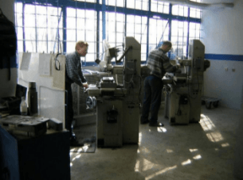
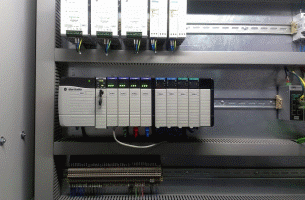
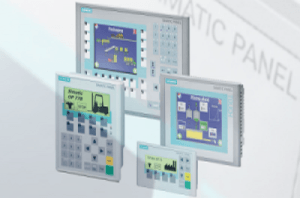
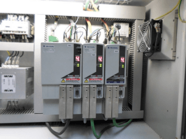

Der Prototypencharakter unserer Produkte und die hohen Qualitätsansprüche unserer Kunden stellen eine große Herausforderung dar.
Um alle Aufträge von A bis Z komplex zu realisieren, haben wir auf dem Werksgelände alle im Rahmen der Entwicklung und des Baus von Maschinen erforderlichen Abteilungen eingerichtet

- Mechanische Konstruktion.
- Elektrik und Programmierung.
- Teileproduktion.
- Montage.
- Planung.
- Einkauf, Logistik, Personalwesen und weitere Hilfsabteilungen.
In der Abteilung für mechanische Konstruktion entwerfen unsere erfahrenen Ingenieure Maschinen auf Grundlage der Softwarelösungen SolidWorks, BricsCad, Autocad und Autodesk Inventor.
Die meisten von uns entworfenen Elemente produzieren wir selbstständig in der firmeneigenen Abteilung für Teileproduktion. Dadurch sind wir in der Lage, die Fertigungsfortschritte laufend zu überprüfen – dank des Einsatzes des eigens entwickelten Produktionsmanagementprogramms SSP2.
|  |
 |
 |
In der Abteilung Elektrik und Programmierung entwerfen unsere Designer und Programmierer auf Grundlage der Softwarelösungen BricsCad und EPLAN Electric P8 elektrische Schemata.
Wir programmieren:
PLC Siemens Simatic S5 und Simatic S7 – Sprachen: STL, LAD, FBD, SCL und Graph
PLC Allen-Bradley MicroLogix und SLC500 in LAD
PLC Allen-Bradley CompactLogix und ControlLogix – Sprachen: Ladder, SFC, FBD und Structured Text
 |
 |
 |
PLC Mitsubishi, GE-Fanuc / Fanuc, Omron und Schneider-Electric
HMI-Panels:
Siemens Simatic OP / TP, Multipanele MP und KT
Allen-Bradley PanelView, Allen-Bradley PanelView Plus und PanelView Plus CE
Proface HMI
|  |
 |
 |
Servoantriebe:
Siemens, Allen-Bradley, Bosch-Rexroth, Mitsubishi, Omron, Yaskawa, SEW, Lenze
|  |
 |
 |
Maschinelles Sehen:
Cognex, Keyence, Dalsa, Omron, DVT, National Instruments, Balluff